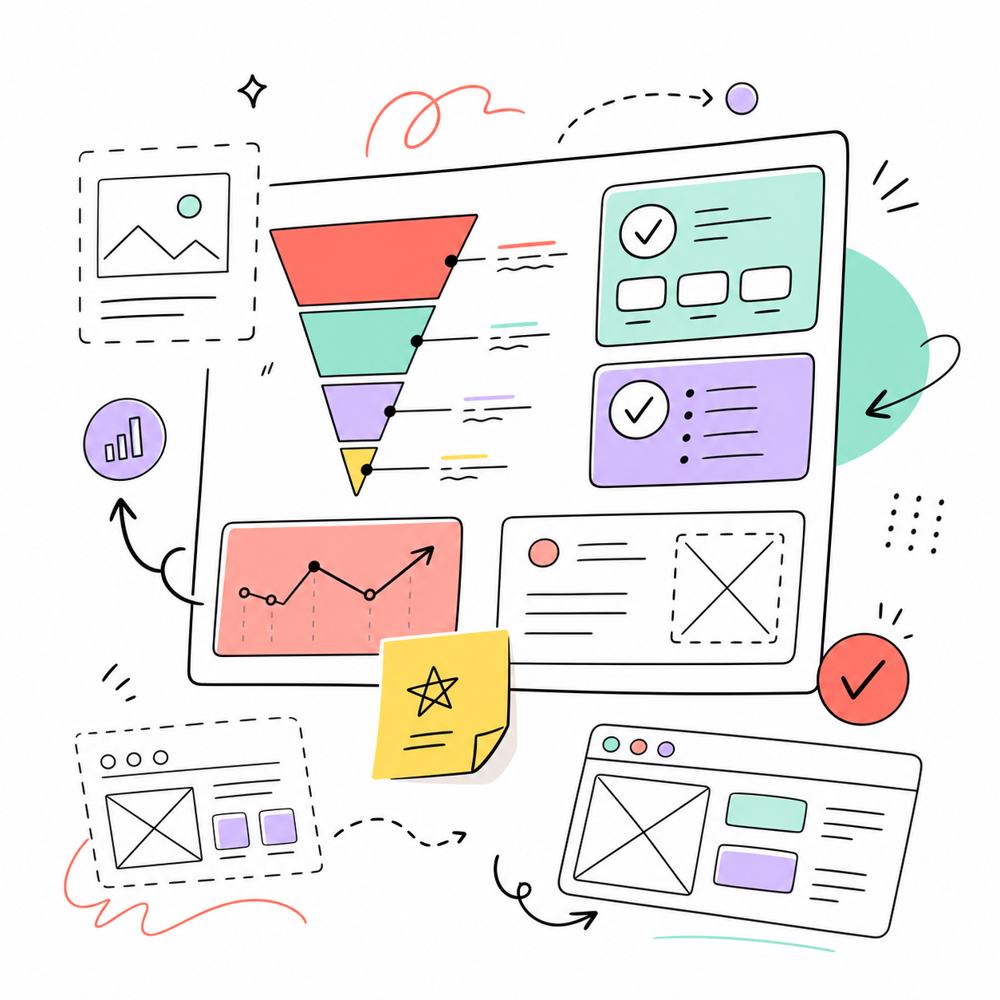

Monthly partner
$4,990
/month
Product clarity for startups and product companies
I help teams find and fix the UX, product, marketing, and conversion problems that quietly kill growth.
$4,990 /month
- First 2 weeks free
- Maximum 3 companies
- Occasionally 4 if the fit is obvious
- No long contracts
The way product judgment should have been sold in the first place
Find the leak
Trust, clarity, momentum, conversion.
Who this is for
For teams building products that already have users, traffic, or revenue.
You are past the blank-page stage. There is something to analyze, simplify, strengthen, and turn into a clearer path to value.
Good fit if you...
Have real users or revenue.
Care about conversion and retention.
Value speed and clear product thinking.
Want senior expertise, not handoffs.
Not a fit if you...
Need a full-time designer.
Want magic in 30 days.
Only need polite validation.
What I review
I look at the places that move the needle.
I do not sell design hours. I sell access to product thinking, UX judgment, and the ability to quickly see where a product is losing users, money, and trust.
UX clarity
Product logic
Messaging
Conversion
Technical trade-offs

I regularly show you what the team stopped seeing.
Not vague "improve the user experience" advice. Specific product judgment about where users, money, momentum, and trust are leaking.
Specific beats generic
Specific insights beat generic advice.
No frameworks for the sake of frameworks. You get clear, prioritized fixes tied to product outcomes.
Root cause, not surface symptoms
Prioritized by impact and confidence
Clear next steps your team can execute
Make it simpler.
Add more whitespace.
Improve the UX.
The button should be more visible.
Step 2 is killing trust because the user has not seen value yet.
This paywall asks for commitment before confidence.
The CTA copy creates the wrong expectation.
This feature is not worth building right now.
Not another 47-page audit PDF.
You bring a flow, landing page, paywall, dashboard, funnel drop, product debate, or rough hypothesis. I review it through product, UX, marketing, development, and business judgment.
The output might be a Loom, a Figma comment, a short product note, a call, or an honest "do not build this yet."
From strategic level to button copy.
I understand what is expensive to build, what can be shipped quickly, what will become technical hell, and what should not be dragged into the sprint at all.
I look at how users arrive, what they expect after an ad or landing page, where copy sells, and where it creates anxiety.
I separate features that move the business from features that only create the illusion of progress.
I look at how a person feels inside the product: whether it is clear, calm, trustworthy, progressive, and worth continuing.
How we work together
The first 2 weeks are free and exploratory, so both sides can understand whether the format is useful.
Go deep
Share context, flows, data gaps, constraints, and internal debates.
Review
I look for product blindness across UX, copy, trust, and logic.
Prioritize
We separate quick fixes, strategic issues, and things to leave alone.
Monthly cadence. Direct feedback. Senior-level attention.
The first 2 weeks are free and exploratory.
This is a test period so both sides can understand whether we are a good fit, whether I can be genuinely useful to your team, whether you are comfortable with my level of honesty, and whether I have enough context to give strong recommendations.
During these two weeks, either side can stop without explaining why. No awkwardness. No hard feelings. No need to justify anything.
If I realize I cannot be useful, I will say it. If you realize the format is not right for you, you simply say it and we stop cleanly.
Credibility
Real product stakes, not design opinions.
I have worked where UX was connected to money, trust, fundraising, acquisition, CAC, conversion, and company survival.
first version
scale-up
regulated fintech
turnaround
Donation product experience helping organizations raise more money with less friction and more trust.
KYC / identity verification pivot for LATAM that helped the company reach a new level before acquisition.
One 5-minute UI fix that started generating additional monthly revenue.
Regulated European fintech work across product focus, marketing strategy, ROI, CAC, and process.
Why you can trust me
I did not come into UX from courses, Dribbble, or pretty buttons. I built products where design affected money, growth, user trust, fundraising, and company survival.
US non-profit donation platform
I designed the product experience for a US non-profit donation platform that helped the company become a category leader. A key growth factor was extremely strong conversion performance: less friction, more trust, and a higher likelihood of completed donations.
My design helps organizations like UNICEF raise more donations.
KYC / identity verification
I led a product pivot in a KYC / identity verification product for the LATAM market. That pivot helped the company reach a new level, raise around $80M, and later get acquired by a major player.
Startup incubator reality
I launched small businesses and products inside a startup incubator for the US market across pet tech, mental health, e-commerce, and other categories. I understand early-stage reality, limited resources, small teams, and decisions that need to make sense now.
Regulated European fintech
I rebuilt teams, processes, product strategy, and marketing strategy inside a 25-year-old regulated European fintech with around 400 people. The job was not to make it look better. The job was to increase ROI, reduce CAC, reshape marketing, rebuild product focus, and give the business a clearer direction again.
A few fun facts
Product blindness
You have looked at your product for too long.
You know where everything is. You remember every compromise. You know why it works this way. Because of that, you no longer see how strange it can feel to a new user.
How I do not work
How I do not work
You are not buying a number of hours or a fixed list of artifacts. You are buying access to my attention, thinking, judgment, and ability to deeply understand the product.
I do not work by the hour or sell "20 hours of UX consulting per month."
I do not work toward KPIs I do not directly control.
I do not promise a fixed number of designs, reports, ideas, or calls every week.
I do not simulate busyness or create documents for the sake of documents.
This is a living product partnership.
Some days require silence, observation, digestion, comparison with other industries, and synthesis. Strong insights do not always appear on schedule, and I will not force feedback just to tick a box.
And some days everything clicks, and I can see the problem across strategy, UX, marketing, development, copy, onboarding, trust, economics, and specific changes at once.
Sometimes the output is a 40-minute Loom. Sometimes it is one Figma comment that saves a week of development. Sometimes it is a call where the picture finally becomes obvious.
This only works with trust.
I need honest access to context: what you are building, where it hurts, what constraints exist, where the team disagrees, where the data is incomplete, and where technical or business compromises live.
On your side, you need to be ready to hear direct feedback. Not always pleasant. Not always comfortable. Not always aligned with something the team has already invested time into. But always with one goal: to make the product stronger.
I cannot be useful if you only show me the polished parts of the product or expect me to validate decisions that have already been made.
What I do not promise
I do not promise a magic pill, +200% conversion in 7 days, or to replace your entire product, design, marketing, and research team. I am not selling guru bullshit.
What I do promise
I promise to look at your product honestly, deeply, and practically. If a screen is bad, I will tell you why. If a feature idea is weak, I will say it. If the problem is the offer, positioning, or strategy, I will say that too.
Pricing rationale
Because I do not take 15 clients. I work with a maximum of 3 companies at a time. Occasionally 4, but only if I genuinely like the product, respect the team, and clearly see where I can be useful.
- Cheaper than hiring a strong senior product designer full-time.
- Cheaper than building the wrong feature.
- Cheaper than losing users in broken onboarding for months.
- Cheaper than redesigning when the real fix is logic, order, and copy.
Optional add-on
Public Product Notes
Some companies do not just want better product thinking. They also want that thinking to become part of their public narrative.
If our collaboration produces useful lessons, I can turn some of them into LinkedIn posts, X/Twitter notes, blog posts, newsletter issues, or short videos.
What this can include
- Public product lessons from our collaboration.
- Before/after thinking around UX and onboarding improvements.
- Founder and product storytelling.
- Short breakdowns of product decisions.
- Posts about what other teams can learn from your product journey.
Approval stays with you. Voice stays with me.
Every post that mentions your company, product, internal work, or our collaboration is approved by you before publishing.
But the writing stays in my voice. No fake praise. No corporate PR. No ghostwritten nonsense.
This is not paid advertising.FAQs
Is this for pre-product startups?
No. If there is no product, traffic, users, revenue, or team yet, this is probably too early.
Do you work by the hour?
No. You are buying attention, thinking, judgment, and product context, not a timesheet.
What do I get every month?
Reviews, Looms, comments, notes, calls, prioritization, funnel reviews, and direct product judgment when useful.
How does the Public Product Notes add-on work?
If useful lessons emerge from the collaboration, I can turn selected ideas into public posts, notes, articles, newsletter issues, or short videos. Anything mentioning your company or internal work is approved before publishing.
What if the first 2 weeks are not a fit?
Either side can stop cleanly. No awkwardness, no hard feelings, no justification theater.
Let me look where the product is quietly losing trust.
Send the URL, the painful flow, and what the team currently believes is happening. The first two weeks are exploratory.